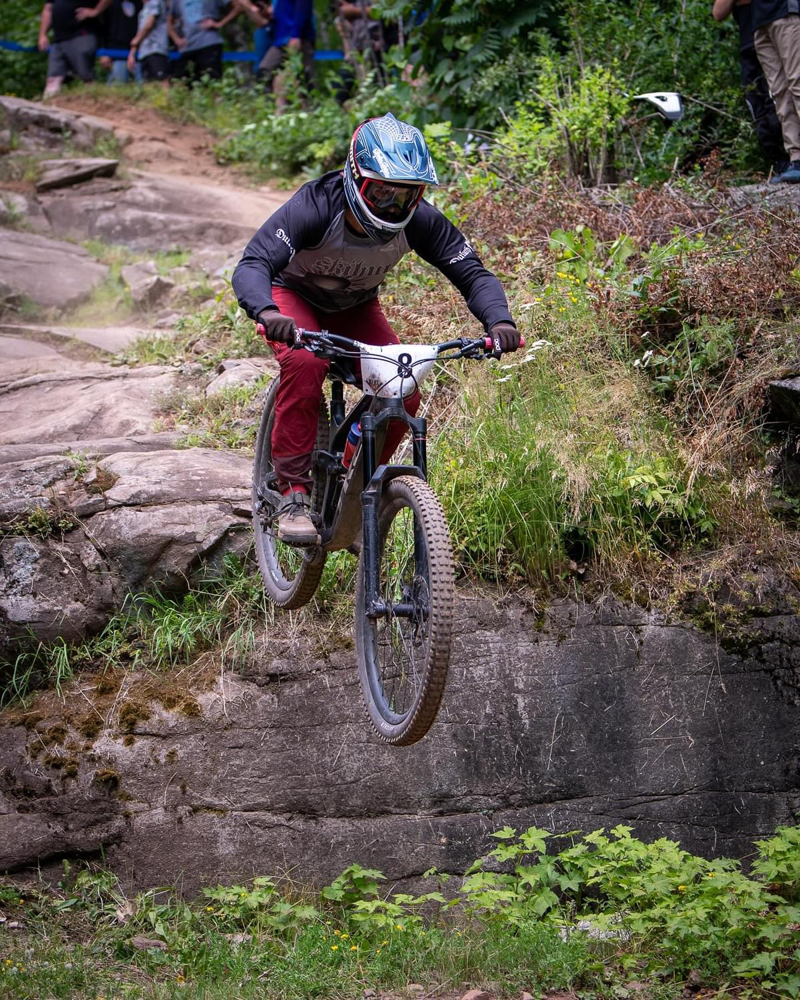
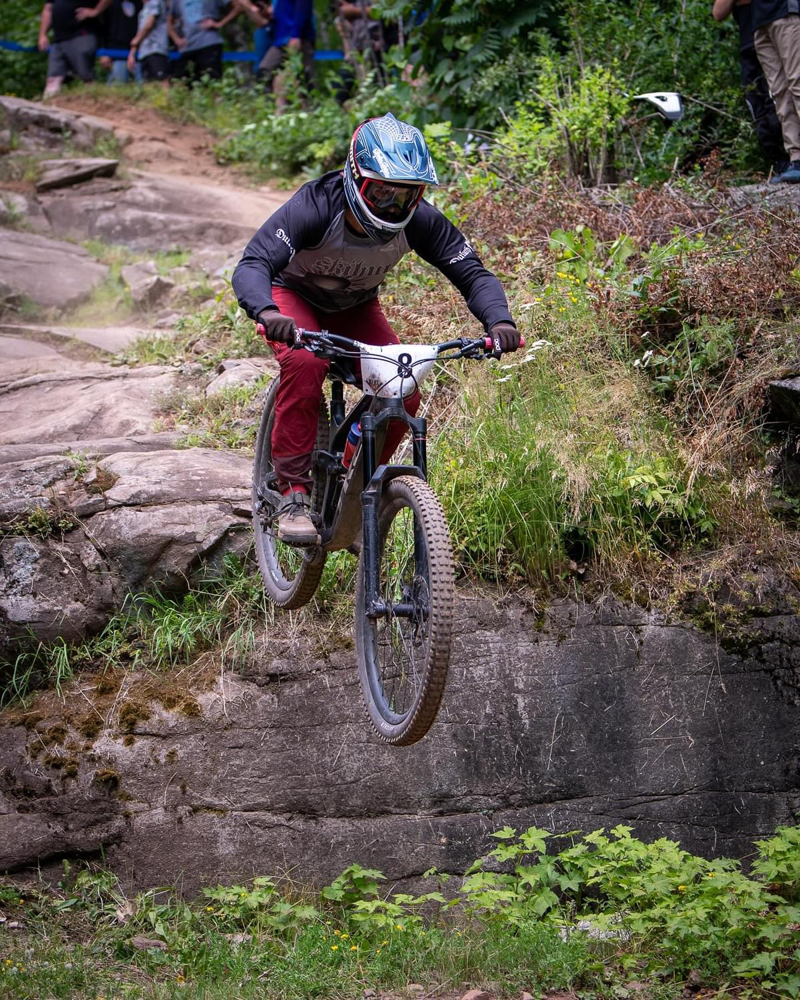
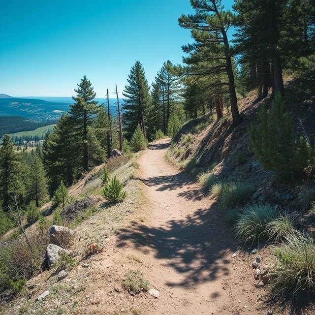

My favorite hobby is mountain biking, something that I have been doing for around 5 years, but only started to really get more into it the last couple years. I started out road biking with my dad as somthing to cross-train for the alpine ski race season, but I quickly enojoyed it and wanted to do more. After a couple years of road biking, I decided I wanted to try mountain biking, and enjoyed that even more. Going to school in Duluth gives me lots of great opportunites to ride, with lots of very nice trails in the immediate area as well.

One of my other favorite hobbies is disc golf. I had been playing regular golf for years, but when I came up to UMD for school, I began to play disc golf as it was cheaper and very accessible.
One interesting fact about me is that I alpine ski raced for 11 years, and once I got into college, I began to coach for Team Duluth. I started skiing when I was around 4 years old, and continued on since then.
